연구 ▷ HST ▷ 무거운 눈 변환의 세 가지 매력 — 줄다리기·수렴·도장깨기
그래프 위에 정의된 데이터 \((\,y,\ \mathcal{G}\,)\) — 각 노드에 값이 하나씩 달려 있고, 노드들이 간선으로 이어진 자료 — 를 다룰 때 가장 먼저 필요한 것은 “두 노드가 얼마나 다른가”를 재는 거리다. 고전적으로는 두 갈래가 있었다. 노드의 값만 보는 유클리드 거리, 그리고 노드가 어떻게 연결되어 있는지(구조)만 보는 그래프 거리들 — 최단거리, 저항거리, diffusion 거리, commute 거리. 전자는 그래프를 버리고 후자는 값을 버린다.
무거운 눈 변환(Heavy-Snow Transform, 이하 HST)은 이 둘을 한 손에 쥔다. 그래프를 지형 삼아 눈을 뿌리고 흘려 쌓으면, 각 노드에는 눈 높이의 시간 궤적이 남는다. 두 노드의 궤적이 얼마나 벌어지는가 — 이것이 snow distance 다. 이 글은 (B) 실험 결과 공유 성격의 글로, HST가 왜 매력적인 거리인지를 세 가지 얼굴로 나누어 보인다. 각 얼굴마다 작은 실험 그래프를 하나 그려 놓고, 그 위에서 여러 거리가 서로 다른 답을 내는 모습을 직접 비교한다. 아래 코드는 모두 외부 패키지 없이 그대로 복사해 실행할 수 있고, 그림은 그 코드로 미리 만들어 실었다.
세 매력은 이렇다.
- 줄다리기 — 값과 구조 사이를 하나의 손잡이 \(t\)로 오간다.
- 수렴의 깔끔함 — 오래 돌렸을 때의 거동이 정수 하나로 완전히 분류된다.
- 도장깨기 — 어떤 고전 그래프 거리도 놓치는 구조를 읽는다.
눈이 쌓이는 과정부터
먼저 눈 변환 자체를 눈으로 본다. 매 스텝, 다음 셋 중 하나가 일어난다.
- 낙하(fall). 새 눈덩이가 한 노드에 떨어진다. 어느 노드에 떨어질지는 노드의 (가중)차수에 비례하는 분포에서 뽑는다. 낙하가 일어나면 그 라운드는 새로 시작한다.
- 흐름(flow). 걷는 이(walker)가 지금 있는 노드에서 더 낮거나 같은 높이의 이웃으로 이동하며 그 자리에 눈을 더한다. 이동 확률은 간선 가중치에 비례한다.
- 막힘(block). 이웃이 모두 지금보다 높으면 흐르지 못하고 제자리에 눈을 더한 뒤, 다음 스텝에 낙하로 넘어간다.
각 노드 \(v\)의 시각 \(t\)에서의 눈 높이를 \(h(v,t)\)라 하면, 이 과정이 만드는 것은 노드마다 하나씩의 높이 궤적 \(\big(h(v,0), h(v,1), \dots, h(v,t)\big)\)이다. 아래 애니메이션은 경로 그래프 \(P_7\) 위에서 눈이 쌓이는 모습이다. 빨간 삼각형이 걷는 이의 위치이고, 막대가 각 노드의 눈 높이다.
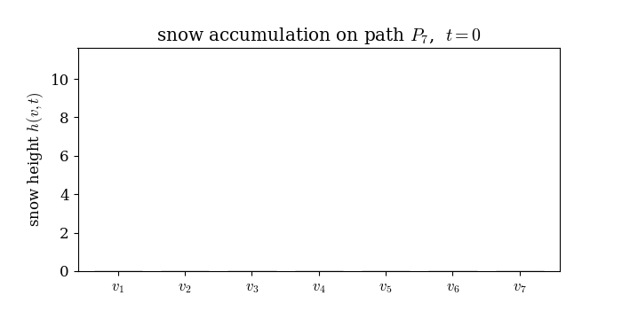
두 노드 \(v_i,v_j\)의 snow distance 는 두 높이 궤적 사이의 유클리드 거리다.
\[ \mathrm{SD}_{ij}(t) \;=\; \sqrt{\ \sum_{s=0}^{t} \big(h(v_i,s) - h(v_j,s)\big)^2\ }. \]
즉 매 시각의 높이 차를 제곱해 시간에 대해 쌓은 것이다. 이 한 줄이 이 글 전체의 주인공이다. 아래는 이 과정을 그대로 옮긴 self-contained 시뮬레이터다. 이후 모든 예제가 이 함수들만 쓴다.
import numpy as np
from numpy.linalg import pinv, matrix_power
def hst_run(W, f, b=0.5, T=20000, seed=0, mu0=None):
"""무거운 눈 변환(AAA 모델)을 T스텝 돌려 높이궤적 H (n×T+1)와 walker 경로를 반환.
W: 간선 가중치(대칭/비대칭 모두 허용). f: 초기 높이(신호).
낙하 노드는 기본적으로 '가중차수 비례' 분포에서 뽑는다."""
rng = np.random.default_rng(seed); n = len(W); W = np.asarray(W, float)
adj = [np.where(W[i] > 0)[0] for i in range(n)] # 각 노드의 (밖으로의) 이웃
if mu0 is None: # 낙하 분포 = 가중차수 비례
deg = W.sum(0); mu0 = deg / deg.sum()
h = np.array(f, float).copy()
H = np.zeros((n, T + 1)); H[:, 0] = h # 높이 궤적
traj = np.full(T + 1, -1, int)
x = rng.choice(n, p=mu0) # 첫 낙하 위치
zmax = rng.integers(n, 2 * n + 1); z = zmax # 라운드 길이 임계값 ~ Unif{n,..,2n}
for t in range(1, T + 1):
if z >= zmax: # (1) 낙하: 새 눈덩이가 떨어진다
x = rng.choice(n, p=mu0); h[x] += rng.uniform(0, b)
z = 0; zmax = rng.integers(n, 2 * n + 1)
else:
nb = adj[x]; down = nb[h[nb] <= h[x]] # 더 낮거나 같은 이웃 = 흐를 수 있는 곳
if len(down): # (2) 흐름: 가중치에 비례해 한 이웃으로
w = W[x, down]; x = rng.choice(down, p=w / w.sum())
h[x] += rng.uniform(0, b); z += 1
else: # (3) 막힘: 제자리에 쌓고 다음 스텝 낙하
h[x] += rng.uniform(0, b); z = zmax
traj[t] = x; H[:, t] = h
return H, traj
def snow_distance(W, f, b=0.5, T=20000, seed=0):
"""snow distance 행렬 SD_ij(T)."""
H, _ = hst_run(W, f, b, T, seed)
return np.sqrt(((H[:, None, :] - H[None, :, :]) ** 2).sum(-1))비교 상대가 될 고전 거리들도 같은 방식으로 준비한다. 유클리드 거리(값), diffusion 거리(구조), 저항거리(구조), 최단거리(구조)다.
def euclid_distance(f): # 값만: |f_i - f_j|
f = np.asarray(f, float).reshape(-1, 1)
return np.sqrt(((f[:, None] - f[None, :]) ** 2).sum(-1)).squeeze()
def diffusion_distance(W, t=6): # 구조: P^t 행들의 π-가중 거리
W = np.asarray(W, float); rs = W.sum(1); P = W / rs[:, None]
Pt = matrix_power(P, t); pi = rs / rs.sum()
d2 = ((Pt[:, None, :] - Pt[None, :, :]) ** 2 / pi[None, None, :]).sum(-1)
return np.sqrt(np.maximum(d2, 0))
def resistance_distance(W): # 구조: 그래프 라플라시안의 유사역행렬
W = np.asarray(W, float); L = np.diag(W.sum(1)) - W
Lp = pinv(L); d = np.diag(Lp)
return d[:, None] + d[None, :] - 2 * Lp
def shortest_hops(W): # 구조: 홉 수
from scipy.sparse.csgraph import shortest_path
return shortest_path((np.asarray(W) > 0).astype(float), unweighted=True)
def upper_corr(A, B): # 두 거리행렬의 상삼각 상관
iu = np.triu_indices(len(A), 1)
return np.corrcoef(A[iu], B[iu])[0, 1]이제 세 매력을 차례로 본다. 각 절은 작은 실험 그래프 하나로 시작한다.
매력 1 — 값과 구조 사이의 줄다리기
유클리드 거리는 값만, 그래프 거리는 구조만 본다. HST는 손잡이 \(t\) 하나로 이 둘 사이를 연속적으로 오간다. 짧게 돌리면 초기 높이(값)의 흔적이 지배하고, 길게 돌리면 흐름이 그래프 구조를 새겨 넣는다. 값과 구조가 정면으로 충돌하는 무대를 하나 만들어 그 이동을 지켜보고, 이어서 두 도메인이 각자 놓치는 국소 이상치를 HST가 잡아내는 장면을 본다.
실험 그래프: 값과 구조가 싸우는 링
가장 극적인 신호는 간선마다 부호가 뒤집히는 Nyquist 신호다. 링 그래프 \(C_{60}\) 위에 \(f(v_i) = (-1)^i\)을 얹는다.
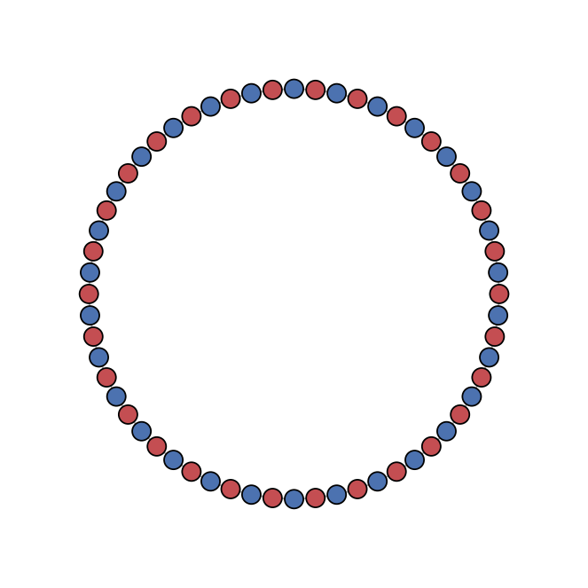
이 그래프를 두 시선으로 보자.
- 값의 시선(유클리드). 이웃한 두 노드는 값이 \(+1\)과 \(-1\)로 정반대다. 그러니 값만 보면 이웃끼리가 오히려 가장 멀다. 한 칸 건너뛴 노드끼리(둘 다 \(+1\))가 값으로는 가깝다.
- 구조의 시선(그래프). 이웃한 두 노드는 간선으로 직접 이어져 있으니 가장 가깝다. 한 칸 건너뛴 노드는 두 발자국 떨어져 있어 조금 멀다.
두 시선이 정확히 반대로 순위를 매긴다. 값은 “이웃이 멀다”, 구조는 “이웃이 가깝다”. snow distance는 시간 \(t\)가 커지면서 이 두 시선 사이를 이동한다. 실제로 \(t\)를 키우며 snow distance가 값 거리·구조 거리와 각각 얼마나 닮는지 상관계수로 재 보자.
n = 60
W_ring = np.zeros((n, n))
for i in range(n):
W_ring[i, (i + 1) % n] = W_ring[(i + 1) % n, i] = 1.0
f_nyq = np.array([(-1) ** i for i in range(n)], float) # Nyquist 신호
ED = euclid_distance(f_nyq) # 값 거리
DD = diffusion_distance(W_ring, 6) # 구조 거리
for t in [200, 1000, 5000, 20000]:
SD = snow_distance(W_ring, f_nyq, b=0.5, T=t, seed=3)
print(t, round(upper_corr(SD, ED), 2), round(upper_corr(SD, DD), 2))
# 200 0.81 0.24 ← 값에 붙어 있고 구조와는 거의 무관
# 20000 -0.02 0.48 ← 값의 흔적은 사라지고 구조만 남음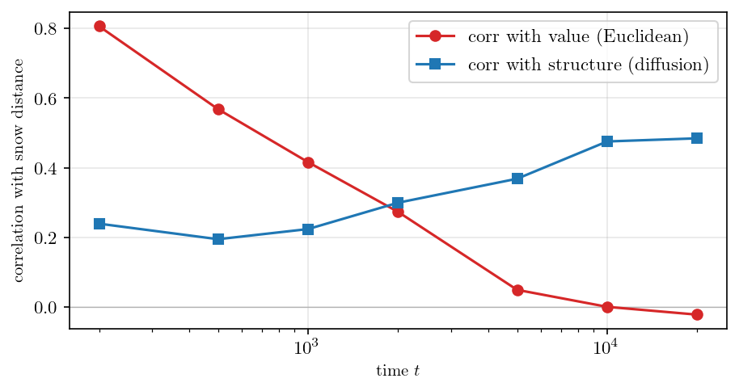
작은 \(t\)에서 snow distance는 값 거리와 강하게 붙어 있고(\(0.81\)) 구조와는 거의 무관하다(\(0.24\)). 이것은 초기 높이가 곧 신호라, 눈이 아직 얼마 안 쌓였을 땐 궤적이 신호를 그대로 기억하기 때문이다. \(t\)가 커지면 값과의 상관이 무너지고(\(-0.02\)) 구조와의 상관이 올라간다(\(0.48\)). 흐름이 그래프를 따라 눈을 실어 나르며 값의 기억을 지우고 연결 구조를 새기기 때문이다. 어느 지점에서 두 곡선이 교차하는데, 그 지점이 값과 구조가 반반씩 섞인 균형점이다. 중요한 건 이것이 두 도메인을 고정 비율로 섞는 게 아니라 \(t\)를 손잡이 삼아 한쪽에서 다른 쪽으로 연속적으로 쓸어 넘기는 것이라는 점이다. 아래 애니메이션이 그 줄다리기를 그대로 보여 준다 — 보라색 공이 VALUE에서 STRUCTURE로 미끄러진다.
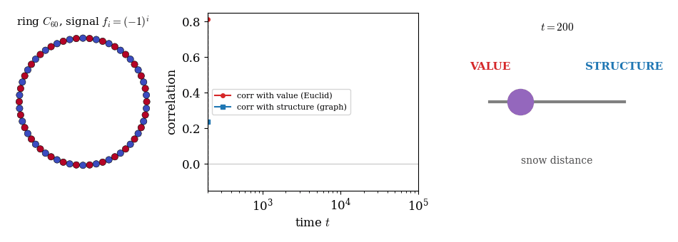
어떤 고전 거리도 이런 손잡이를 주지 않는다. 유클리드는 언제나 값, 그래프 거리는 언제나 구조에 고정돼 있다. HST만이 둘 사이의 어느 지점이든 골라 앉을 수 있다.
실험 그래프: 두 도메인이 각자 놓치는 국소 이상치
값과 구조를 맞세우기 때문에, HST는 자기 이웃과 값이 어긋나는 노드 — 어느 한 도메인만으로는 보이지 않는 국소 이상치 — 를 잡아낸다. 두 개의 링을 위아래로 붙인 원기둥을 만들고, 위 링에는 값 \(-3\), 아래 링에는 값 \(+3\)을 주되, 아래 링의 한 노드만 \(-3\)으로 뒤집는다.
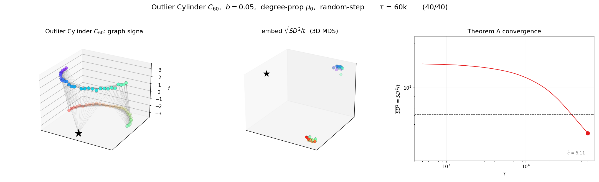
이 뒤집힌 노드를 세 거리는 어떻게 볼까.
- 유클리드(값). 값이 \(-3\)이라 위 링 전체와 똑같다. 그러니 위 링에 딱 붙여 버린다. “얘는 위 링 식구야.”
- diffusion(구조). 위치는 평범한 아래 링 노드다. 그러니 아래 링에 붙인다. “얘는 아래 링 식구야.”
- 어느 쪽도 “값과 구조가 어긋난다”는 사실 자체는 보지 못한다. 각자 자기 도메인 안에서만 판단하기 때문이다.
C = 30; N = 2 * C
pos = np.zeros((N, 3))
for k in range(C):
a = 2 * np.pi * k / C
pos[k] = [np.cos(a), np.sin(a), 1.0] # 위 링
pos[C + k] = [np.cos(a), np.sin(a), 0.0] # 아래 링
Dm = np.sqrt(((pos[:, None] - pos[None, :]) ** 2).sum(-1))
Wc = np.exp(-Dm ** 2 / (2 * 0.5 ** 2)); Wc[Dm > 1.2] = 0; np.fill_diagonal(Wc, 0)
y = np.zeros(N); y[:C] = -3; y[C:] = +3
out = C + C // 2; y[out] = -3 # 아래 링 한 노드를 −3으로 flip
SDo = snow_distance(Wc, y, b=0.05, T=20000, seed=4)
EDo = euclid_distance(y); DDo = diffusion_distance(Wc, 6)
# 뒤집힌 노드가 위/아래 링 중 어디에 붙는지 (각 거리의 전형적 위–아래 간격으로 정규화)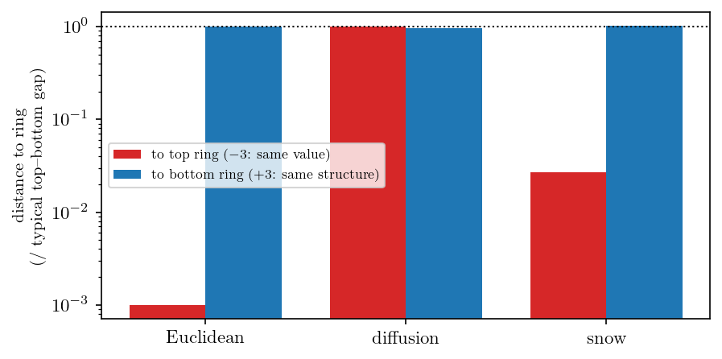
snow는 둘 다 읽는다. 값으로는 위 링에 가깝다고 하면서도, 정작 제가 구조적으로 앉아 있는 아래 링에서는 이웃 대비 약 49배 튀는 이상치로 표시한다. 즉 “얘는 값으로는 위 링 무리인데 왜 아래 링 한복판에 앉아 있지?”라는 어긋남 자체를 거리로 드러낸다. HST가 그래프 위 국소 평균변화 탐지기로도 쓰일 수 있다는 뜻이다. 값만 보는 거리도, 구조만 보는 거리도 이 어긋남을 볼 수 없다 — 어긋남은 두 도메인의 관계에 있지 어느 한쪽에 있지 않기 때문이다.
매력 2 — 수렴이 깔끔하다
좋은 거리는 오래 돌렸을 때의 거동이 예측 가능해야 한다. HST의 \(\mathrm{SD}^2_{ij}(t)\)는 \(t\to\infty\)에서 정수 하나로 완전히 분류된다.
실험 그래프: 균형의 링과 드리프트의 별
시각 \(s\)에서의 높이 차 \(\big(h(v_i,s)-h(v_j,s)\big)^2\)가 최악의 경우 얼마나 자라는지 생각해 보자. 높이 차는 눈이 쌓인 총량 규모이므로 최악의 경우 \(s\)에 비례하고, 그 제곱은 \(s^2\)까지 자란다. 그런데 실제로는 두 노드의 눈이 서로 상쇄되며 이 성장이 억눌린다. 억눌리는 정도를 정수 \(k\)로 세자 — 이를 쌍 \((i,j)\)의 상쇄 티어(cancellation tier) 라 부른다. 지배항이 \(s^{2-k}\)이면, 시간에 대해 한 번 더 누적하는 정의
\[ \mathrm{SD}^2_{ij}(t) \;=\; \sum_{s=0}^{t}\big(h(v_i,s)-h(v_j,s)\big)^2 \]
가 지수를 하나 올려서, 결국
\[ \mathrm{SD}^2_{ij}(t) \;\asymp\; t^{\,3-k}, \qquad k \in \{0,1,2\} \]
가 된다. 세 값이 세 개의 고전적 거동이다: \(k=0\)이면 \(t^3\)(드리프트), \(k=1\)이면 \(t^2\)(중간), \(k=2\)이면 \(t^1\)(균형). 이 분류가 어림짐작이 아님을 두 개의 작은 그래프로 확인한다.
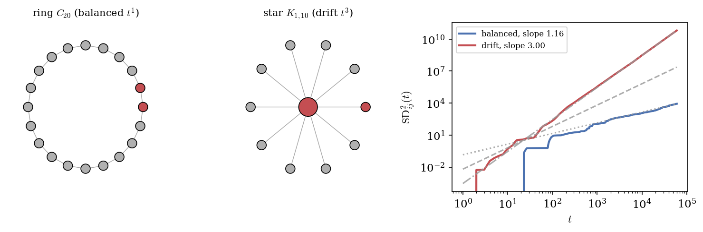
왜 이렇게 갈리는지가 이 그래프의 핵심이다. 링에서는 이웃한 두 노드가 서로 거울상이라 눈을 받는 빈도가 같다. 한쪽이 잠깐 높아지면 흐름이 그쪽에서 반대쪽으로 눈을 실어 나르며 곧 균형을 되찾는다. 그래서 높이 차가 0 주변을 진동하고, 그 제곱을 쌓아도 \(t^1\)로만 자란다. 별에서는 사정이 다르다. 낙하가 가중차수에 비례하니 차수 10인 허브가 차수 1인 잎보다 열 배 자주 새 눈을 받는다. 게다가 허브에 올라온 걷는 이는 낮은 잎들로 쉽게 흘러 나가지만, 잎에 있는 걷는 이는 유일한 이웃인 높은 허브로 못 올라가 자주 막힌다. 두 효과가 겹쳐 허브가 잎보다 꾸준히 빨리 쌓이고, 높이 차가 시간에 선형으로 벌어진다(드리프트). 그 제곱은 \(t^2\), 시간 누적은 \(t^3\)이다.
def sd2_traj(W, i, j, T=60000, b=0.5, seed=1): # 시간에 대한 SD^2_ij 누적 궤적
H, _ = hst_run(W, np.zeros(len(W)), b, T, seed)
return np.cumsum((H[i] - H[j]) ** 2)
def fit_slope(sd2, T): # 로그–로그 기울기 = 지수
tt = np.arange(1, len(sd2)); s = sd2[1:]
m = (tt >= T // 10) & (s > 0)
return np.polyfit(np.log(tt[m]), np.log(s[m]), 1)[0]
ring20 = np.zeros((20, 20))
for i in range(20): ring20[i, (i + 1) % 20] = ring20[(i + 1) % 20, i] = 1
star = np.zeros((11, 11))
for k in range(1, 11): star[0, k] = star[k, 0] = 1
print(round(fit_slope(sd2_traj(ring20, 0, 1), 60000), 2)) # 1.12 ≈ t^1 (균형)
print(round(fit_slope(sd2_traj(star, 0, 1), 60000), 2)) # 3.04 ≈ t^3 (드리프트)측정된 두 기울기가 \(t^1\)과 \(t^3\)을 정확히 집어낸다(위 그림 오른쪽). 중간 티어 \(t^2\)는 일반적으로 나타나는 지수가 아니라 두 거동을 가르는 칼날 같은 경계로, 드리프트 쌍이 점유 격차를 0으로 좁히며 균형으로 이완하는 딱 그 순간에만 걸린다. 드리프트의 원인인 “허브가 선형으로 벌어진다”는 것도 직접 확인할 수 있다.
H, _ = hst_run(star, np.zeros(11), b=0.5, T=60000, seed=1)
gap = H[0] - H[1] # 허브 − 잎 높이 차
print(gap[10000], gap[30000], gap[60000]) # 303, 919, 1852 ← 시간에 비례 = 드리프트높이 차가 \(303 \to 919 \to 1852\)로 시간에 비례해 벌어진다. 여기서 중요한 매력은, 티어가 쌍 \((i,j)\)만의 성질이라는 점이다. 같은 변환 하나가 어떤 쌍은 \(t^1\)로, 어떤 쌍은 \(t^3\)로 재어, 그래프를 세 스케일에서 동시에 읽는다. 지수 하나에 묶인 고정 스케일 그래프 거리들이 흉내 낼 수 없는 완전성이다.
HST₀ — 스펙트럴 필터 가족의 한 식구
이론이 얼마나 깔끔한지는 자연스러운 대리물에서 닫힌 꼴이 나온다는 데서도 드러난다. 블록·흐름 동역학을 평범한 랜덤워크로 바꾼 변형 \(\mathrm{HST}_0\)을 생각하자. 이 대리물의 상수는 바탕 워크 \(p^\infty\)의 고유쌍 \((\lambda_k, v_k)\)으로 닫힌 스펙트럴 합이 된다.
\[ \sigma^2_{ij} \;=\; \sum_{k \ge 2} \frac{1 + \lambda_k}{1 - \lambda_k}\,\big(v_k(i) - v_k(j)\big)^2 . \]
이 형태 \(\sum_k f(\lambda_k)\,|v_k(i)-v_k(j)|^2\)는 고전적인 스펙트럴 필터 거리 가족 그 자체다 — diffusion은 \(f(\lambda)=(1-\lambda)^{2t}\), heat은 \(e^{-t\lambda}\), 저항은 \(1/\lambda\). \(\mathrm{HST}_0\)은 필터 \((1+\lambda)/(1-\lambda)\)를 쓰는 어엿한 스펙트럴 거리다(시뮬레이션으로 평균비 \(1.010\)까지 확인된 추측식). 반면 시간에 따라 지형이 바뀌는 완전한 HST는 어떤 고정 필터로도 표현되지 않아 이 가족 바깥에 있다. \(\mathrm{HST}_0\)은 그 정확히 풀리는 스펙트럴 그림자인 셈이다. 요컨대 HST는 고전 스펙트럴 이론에 닿아 있으면서 그것을 넘어선다.
매력 3 — 어떤 그래프 거리도 못 읽는 구조를 읽는다
신호가 평평해도(\(y = \mathbf{0}\)) 고전 그래프 거리는 \(\mathcal{G}\)를 하나의 단면으로 눌러 버려 오판할 수 있다. snow는 여러 단면을 한꺼번에 읽는다. 세 가족을 차례로, 각자의 실험 그래프로 깬다.
오솔길과 고속도로 — 최단거리·diffusion이 못 재는 병목 (kite)
산속 오솔길을 떠올려 보자. 분명 길은 있는데, 한 명씩 겨우 지나가는 좁은 길이라 사실상 없는 거나 마찬가지다. 전기회로에도 같은 게 있다. 저항 하나만 사이에 두면 전류가 좁은 통로로 헐떡이며 지나가지만, 똑같은 저항을 여러 개 병렬로 묶으면 합성저항이 낮아지며 두 점 사이가 넓은 고속도로처럼 변한다. 직렬은 오솔길, 병렬은 고속도로다. 간선 하나를 굵게 만드는 게 아니라 간선의 수 자체가 흐름을 정한다는 점이 재미있다.
이 직관을 담은 것이 연(kite) 그래프 \(K_{2,20}+R\)이다. 앵커(빨간 별)가 왼쪽 허브(주황 사각형)와는 20개의 중간 노드(회색)를 거치는 20갈래 병렬 경로(고속도로)로, 오른쪽 매달린 노드(보라 사각형)와는 단 하나의 외길(오솔길)로 이어진다.
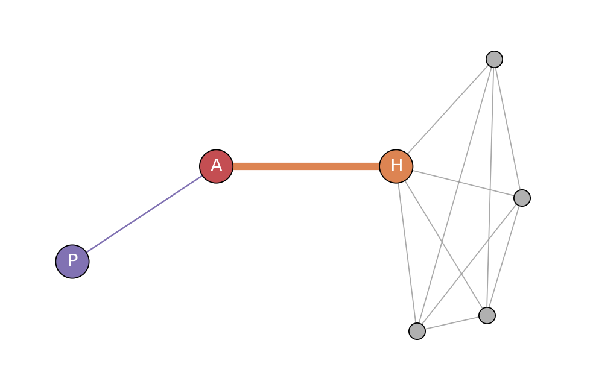
앵커에서 볼 때 20갈래로 이어진 허브와 외길로 매달린 노드 중 누가 가까운가? 아래 세 임베딩이 이 그래프의 핵심이다.
- 최단거리(Spectral). 20개 중간 노드를 사방에 흩뜨리고, 20갈래로 이어진 허브를 “두 발자국”이라며 외길 끝 매달린 노드(한 발자국)보다 오히려 멀게 놓는다. 길의 수를 못 세니 고속도로를 오솔길만도 못하게 본다.
- 저항거리. 병목은 알아채 매달린 노드를 바깥에 떼어 놓는다(흐름 시선에 가깝다). 다만 20개 중간 노드를 여전히 넓게 퍼뜨린다.
- HST. 20개 중간 노드를 앵커·허브 옆에 다닥다닥 붙여 “20갈래 고속도로는 사실상 한 자리”임을 그려내고, 외길 끝 매달린 노드만 멀찍이 떼어 놓는다. 걷는 이가 실제로 그 위를 걸으며 20갈래 길을 한 묶음으로 재기 때문이다.
병목이 있다는 것뿐 아니라 그 내부까지 제대로 배치하는 건 셋 중 HST뿐이다. 그래프는 self-contained 코드로도 곧장 세울 수 있다.
import networkx as nx
GK = nx.Graph()
ANCHOR, HUB = 0, 1
mids = list(range(2, 22)) # 20개 중간 노드
for m in mids:
GK.add_edge(ANCHOR, m); GK.add_edge(HUB, m) # 20갈래 병렬 경로 (고속도로)
GK.add_edge(ANCHOR, 22) # 단일 외길 (오솔길)
W = nx.to_numpy_array(GK, nodelist=range(23))
SD = snow_distance(W, np.zeros(23), b=0.05, T=20000, seed=1)
# 앵커에서: 고속도로 끝 허브는 가깝고, 외길 끝 매달린 노드는 멀리 떨어진다방향 — 가역 거리가 지워야만 하는 화살표 (directed)
랜덤워크·저항 거리는 가역 워크에서만 정의된다. 방향 그래프에서는 먼저 간선을 대칭화해 화살표를 지워야 한다. 그런데 지우고 나면 안 보이는 구조가 있다. \(a \to \{b,c\} \to d\)에 여분의 호 \(b \to c\)를 더한 그래프를 보자.
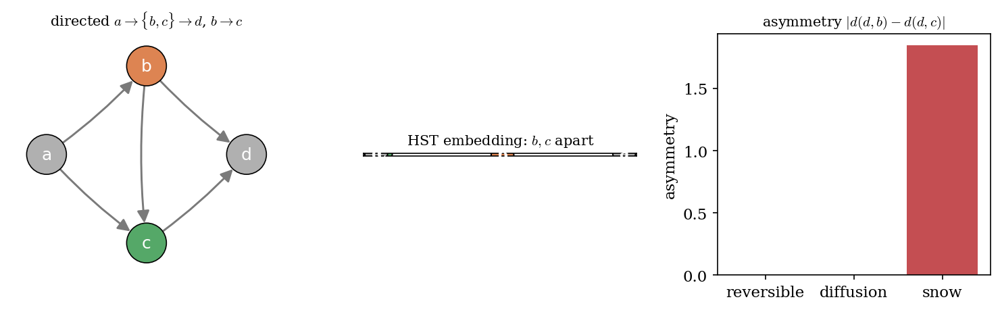
간선을 무향으로 만드는 순간 \(b\)와 \(c\)는 완전히 대칭이 된다(둘 다 \(a,d\)와 이어지고 서로 이어진다). 그래서 모든 가역 거리가 \(d(d,b) = d(d,c)\)로, 둘을 정확히 같게 본다. 화살표를 지웠으니 당연하다. 하지만 흐름에서는 \(b\)가 \(c\)의 상류다 — 눈은 \(b\)에서 \(c\)로 흐르지 그 반대로는 안 흐른다. snow는 이 방향을 그대로 읽는다.
Wd = np.zeros((4, 4))
Wd[0, 1] = Wd[0, 2] = 1 # a→b, a→c
Wd[1, 3] = Wd[2, 3] = 1 # b→d, c→d
Wd[1, 2] = 1 # b→c (상류/하류 방향)
SDd = snow_distance(Wd, np.zeros(4), b=0.5, T=20000, seed=1)
Wsym = np.maximum(Wd, Wd.T) # 가역 거리는 대칭화부터
rd_s = resistance_distance(Wsym)
print(round(SDd[3, 1] / SDd[3, 2], 1)) # snow: 28.5 (b,c를 크게 가름)
print(rd_s[3, 1] == rd_s[3, 2]) # resistance: True (구별 못함)최단·저항·diffusion 모두 \(d(d,b)\)와 \(d(d,c)\)를 정확히 같게 주는 반면, snow는 둘을 수십 배로 가른다. 가역 거리가 정의상 버릴 수밖에 없는 방향 정보를, 무거운 눈 과정은 흐름의 자연스러운 부산물로 직접 읽는다.
스케일 — 스펙트럴 거리가 사라져 버리는 지점 (collapse)
스펙트럴 거리들은 스케일 \(t_{\mathrm{diff}}\)를 하나 지니는데, 그 스케일을 키워 워크가 충분히 섞이면 모든 정보를 잃는다. 다리 하나로 이어진 두 6-클리크를 보자.
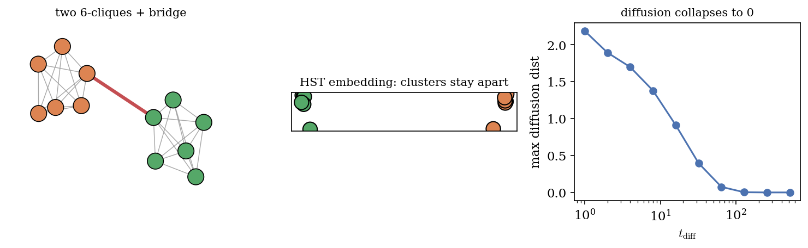
이 그래프에는 뚜렷한 두 군집과 그 사이의 병목(다리)이 있다. 좋은 거리라면 이 경계를 언제 재도 유지해야 한다. 그런데 diffusion 거리는 스케일 \(t_{\mathrm{diff}}\)가 커지면 가장 큰 거리마저 0으로 무너져, 모든 노드가 서로 등거리가 된다 — 과잉혼합이다.
nb = 12
Wb = np.zeros((nb, nb))
for a, b0 in [(0, 6), (6, 12)]:
for i in range(a, b0):
for j in range(i + 1, b0):
Wb[i, j] = Wb[j, i] = 1
Wb[5, 6] = Wb[6, 5] = 1 # 다리 하나
for td in [2, 32, 512]: # diffusion: 스케일을 키우면 최대거리가 붕괴
print(td, round(diffusion_distance(Wb, td).max(), 4)) # 1.895, 0.396, 0.0000
SDb = snow_distance(Wb, np.zeros(nb), b=0.5, T=30000, seed=5) # snow: ~4배로 유지diffusion 거리는 \(t_{\mathrm{diff}}=2\)에서 약 \(1.9\)였다가 \(t_{\mathrm{diff}}=512\)에서는 수치적으로 0까지 무너진다. snow는 그런 붕괴를 겪지 않고 두 군집을 언제나 군집 내부의 약 4배 거리로 벌려 둔다. 눈은 시간에 걸쳐 쌓이지 특정 스케일에서 평형에 도달해 정보를 잃지 않기 때문이다. 아래 애니메이션이 그 대비다 — 왼쪽 diffusion 임베딩은 한 점으로 뭉개지고, 오른쪽 snow 임베딩은 두 군집을 계속 떨어뜨려 둔다.
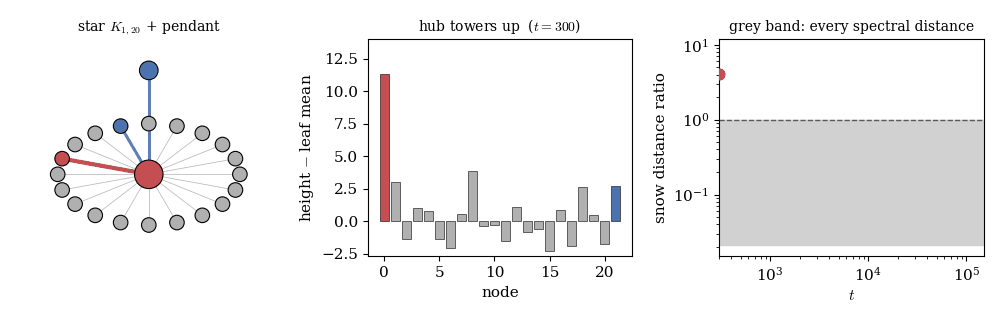
세 얼굴을 모으면
여섯 개의 작은 실험 그래프가 한 결론을 가리킨다. 무거운 눈 변환은 값과 구조 사이를 손잡이 하나로 오가고(\(t\)의 줄다리기), 오래 돌렸을 때의 거동이 정수 하나로 완전히 분류되며(세 티어), 고전 그래프 거리들이 — 하나씩, 그리고 여기서는 전부 — 놓치는 병목·방향·군집 구조를 읽는다(도장깨기). 값만 보는 거리도, 구조만 보는 거리도, 스케일에 갇힌 거리도, 화살표를 지워야 하는 거리도 아니다. 그래프 위 데이터를 지형 삼아 눈을 쌓아 보는 것 — 그 단순한 발상이 셋을 한꺼번에 준다.
위 모든 그림은 이 글의 hst_run / snow_distance와 고전 거리 함수만으로 계산됐다(외부 패키지 없이 복사·실행 가능). 낙하 분포는 가중차수 비례, 흐름은 간선 가중치 비례 downstream 이동, 막힘은 제자리 누적 후 낙하로 정의된다(AAA 모델). 시드는 각 코드에 표기.